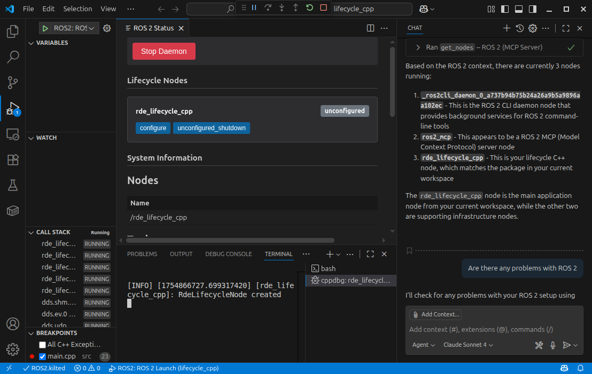

Robotics Development Extensions for ROS 2
This is a Visual Studio Code Extension that provides debugging support for Robot Operating System 2 (ROS 2) development ROS 2 on Windows, Linux and MacOS. The Robot Operating System is a trademark of Open Robotics.

Features
- Automatic ROS environment configuration.
- Allows starting, stopping and viewing the ROS core status.
- Automatically create
colconbuild and test tasks. - Run and Debug ROS Launch Files
- Resolve dependencies with
rosdepshortcut - Syntax highlighting for
.msg,.urdfand other ROS files. - IntelliSense support for ROS message files with hover information showing message properties and go-to-definition
- Automatically add the ROS C++ include and Python import paths.
- Format C++ using the ROS
clang-formatstyle. - Discover and run ROS 2 tests with integrated Test Explorer support
- Debug a single ROS node (C++ or Python) by attaching to the process.
- Debug ROS nodes (C++ or Python) launched from a
.launchfile. - Configure C++ and Python IntelliSense for ROS development
- Available for Microsoft Visual Studio Code and Anysphere's Cursor.
Other Offerings
URDF / Xacro Editing
Ranch Hand Robotics offers a URDF and Xacro editor, which pairs well with this extension
Robot Developer Extensions for ROS 1
For those working with ROS 1, the Robot Developer Extensions for ROS 1 are available to support you
Discussions
Github Discussions are provided for community driven general guidance, walkthroughs, or support.
Sponsor
If you find this extension useful, please consider sponsoring Ranch Hand Robotics to help support the development of this extension and other open source projects.
Acknowledgements
This extension is rebranded and re-released by Ranch Hand Robotics, founded by the maintainer of the ms-iot VSCode ROS Extension with permission from Microsoft.
- Andrew Short (@ajshort), original author
- James Giller (@JamesGiller)
- PickNikRobotics (@PickNikRobotics) for code formatting
- Microsoft (@ms-iot) for curating the ms-iot extension
- and the many contributors and users over the years.